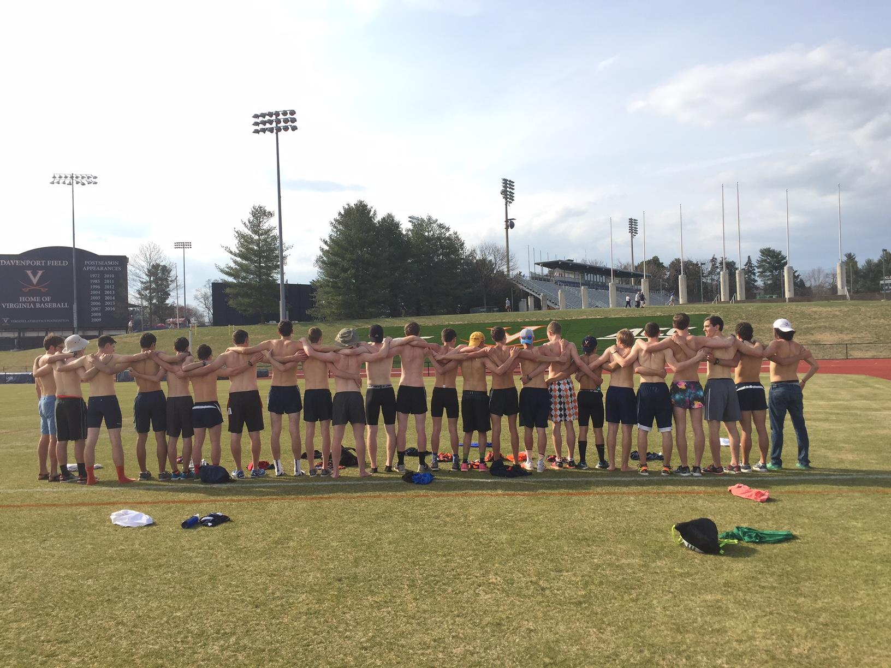
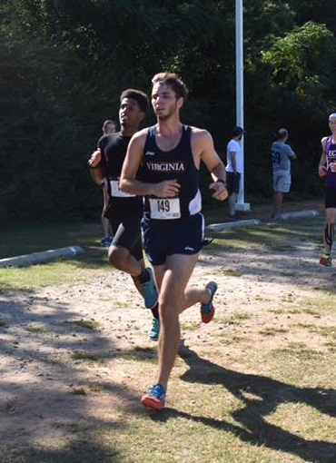

Men's Workouts
Completely jacked. In the lanky, cardiovascular way.
Welcome!
Our Men's team has much to offer for those looking to begin or continue running in college. We offer a way to compete in college with other club athletes along with DIII schools. We meet Monday-Thursday at Nameless Field, 5pm during day light savings and at 4pm after daylight savings. Although many of us are competitive, we welcome all levels of running and encourage those interested in finding a running family at UVA to join our team!
Cross Country
In the Fall, we compete in Cross Country, however we race the 8k rather than the 5k from high school. A typical week will often consist of three quality days with the rest being easy or off days. The quality days consist of two workouts and one long run.
- Easy Runs
- On days between workouts, runs should be easy and done at a conversational pace.
- Long Runs
- Once each week, usually Sunday, we go for a long run that equals about one fourth of the weeks total mileage.Pacing should be comfortable, although not necessarily easy.
- Tempos
- These runs will typically take the form of a 20 to 30 minute run holding a pace that is roughly 30 seconds slower than your current 5k pace. One these runs we are trying to improve the efficiency of our body at removing lactic acid.
- Fartleks
- Fartlek runs are designed to help improve the speed and strength while at an anaerobic threshold. Repeats of this type range from 30 seconds to 2 minutes or about 200m to 800m.
- Interval
- Interval runs are designed to work on anaerobic power. Typically, these workouts feature repeats of 2 to 5 minutes between 3k and 5k pace. These are usually the most demanding workouts for they are run near your VO2 max.
Types of Workouts

Track
800/1600: This group will have two different types of workouts each week. 1) Emphasizing speed and turnover and 2) emphasizing strength. The speed workouts will typically contain 200s and 400s while the strength workouts range anywhere from 400m to 1000m depending on the race distance.
3k/5k: This group will be a blend of the cross country approach with more speed in order to obtain these two objectives. 1) The same strength build during the cross country season and 2) the speed necessary for a shorter track race. Usually, one workout will aim at building long distance strength and efficiency while the other workout will focus more on speed.
Jack Wren
Men's Workout Coordinator.
My name is Jack Wren and I am a second year. This is my 9th year of competitive running. I ran at Cape Henry in Virginia Beach for 7 years. Personally, I prefer the 800m and would love to hit 1:56 this year and for the team as a whole I would love to see us build our track team more. For cross country, I think moving into the top 2 at regionals would be a great step for our club.
